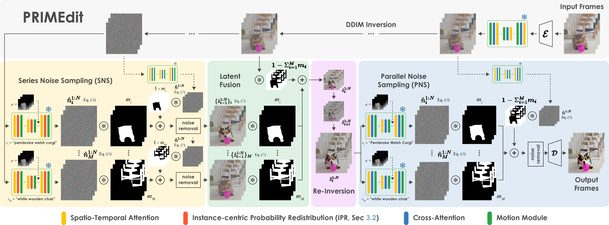

Samuel Teodoro
PhD Student at KAIST
About Me
I am currently a PhD student at the Video and Image Computing Lab (VICLab) at KAIST, advised by Prof. Munchurl Kim. I received my BS in Electrical Engineering from the University of the Philippines Los Baños. My research focuses on controllable image and video generation and editing using diffusion models.
Outside of research, I enjoy photography.
News
- Apr, 2026 Attended ICLR 2026 and presented our work OmniText.
- Jan, 2026 Our work OmniText: A Training-Free Generalists for Controllable Text-Image Manipulation got accepted at ICLR 2026!
Publications
MotionGrounder: Grounded Multi-Object Motion Transfer via Diffusion Transformer
Under Review

OmniText: A Training-Free Generalists for Controllable Text-Image Manipulation
ICLR 2026

PRIMEdit: Probability Redistribution for Instance-aware Multi-object Video Editing with Benchmark Dataset
Under Review